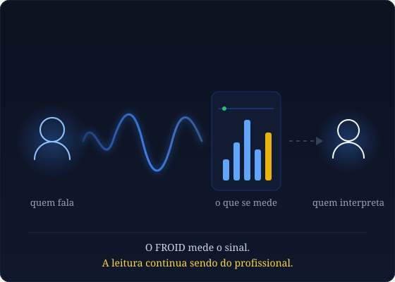

Sobre
Engenharia biomédica aplicada com transparência sobre o que é ciência e o que é produto.
Quem faz o FROID
O FROID nasceu do cruzamento entre engenharia de sinal, visão computacional e prática clínica — buscando dar ao terapeuta uma camada objetiva de leitura, sem prometer o que a ciência ainda não valida.

Fale com o time
São dois produtos com necessidades distintas. Diga por qual deles você chegou até aqui e a conversa começa no lugar certo.
Para quem atende pacientes e quer usar o FROID na sessão. Dá para conhecer o produto sem contratar nada.
Para o empregador que precisa cumprir a Portaria MTE nº 1.419/2024. Antes de agendar, vale checar se o efetivo da sua unidade atinge o piso de anonimato — abaixo dele a campanha não produz resultado liberável.
Um endereço para as duas frentes — sessões clínicas e avaliação NR-1. Diga por qual delas você chegou e a conversa começa no lugar certo.
suporte@froid.com.br